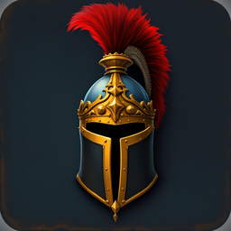

Unhorsed · Knight Jousting Duels
At a glance
Unhorsed is a jousting game with asynchronous "ghost" duels against passes recorded by other players. This policy explains what the game stores and sends, why, and what you can do about it.
The name you choose for your knight. You type it once, after your first ride. Other players see it in ghost duels and on the ranked ladder. It is filtered for offensive words and limited to 18 characters.
An anonymous identifier. When the game starts it signs in anonymously with Firebase Authentication (a Google service). This creates a random identifier that marks your saves and ghosts as yours. On its own it is not linked to your name, e-mail or phone number.
Your progress, saved online. After each match and purchase your game progress (gold and diamond balances, the items you own and wear, your road and rank) is copied to our cloud database (Google Cloud Firestore) under that identifier, so it can be restored. Only you can read it.
Your recorded passes and your knight's look. After each match the timing of your taps, the zone you struck and the zone you guarded in each pass, the outcome and the items your knight wore are published as a "ghost" so other players can ride against them. Your knight name, title and rank points appear on the public ranked ladder.
If you choose to sign in (optional). The title screen offers SIGN IN WITH GOOGLE on Android (through Google Play Games) and SIGN IN WITH APPLE on iOS, to keep your progress across devices. Signing in links your game identifier to that account. With Google Play Games we receive your Play Games player identifier and gamer name. With Apple we receive an Apple identifier and, if you allow it, your name and e-mail address (Apple lets you hide your real address behind a relay address). We use these only to sign you in and restore your progress; we never e-mail you or show them to other players.
Diagnostics and crash reports. The game includes Firebase software, which automatically records technical information: device model and operating system version, app version, language, the country inferred from your network address, session times and which screens were used, and, if the game crashes, a crash report (stack trace and device state). This is used only to keep the game working and to understand, in aggregate, how it is played.
Purchases. Diamond packs are sold through Google Play or the Apple App Store. The stores process the payment and keep the purchase history under their own privacy policies. The game itself only keeps your balances and the items you own.
We do not collect your contacts, precise location, photos, microphone or camera data, advertising identifiers, or health or financial information. The game shows no advertising and does not track you across other apps or websites.
We do not sell any information and do not use it for advertising.
Google LLC provides the services the game relies on (Firebase Authentication, Cloud Firestore, Firebase Analytics and Crashlytics, and Google Play Games). Google processes this data on our behalf under the Google Privacy Policy and Firebase's data processing terms. Apple processes Sign in with Apple under its own policy. Google Play and Apple process purchases under their own policies. Other players see your knight name, title, rank, recorded passes and gear. No other third party receives your data.
Your saves are kept on your device and in Cloud Firestore in Google's data centres. Published ghosts and your ladder line are kept for as long as the game operates, because other players' duels depend on them. Diagnostics are retained by Firebase for up to 14 months. Settings → Reset Progress erases the saves on your device; to erase everything we hold, see below.
If you are in the European Economic Area, the United Kingdom, Brazil, California or another region with data-protection law, you have the rights those laws give you (access, rectification, erasure, restriction, portability, objection) and may complain to your supervisory authority. Our legal basis is the performance of the game you asked for (Art. 6(1)(b) GDPR) and our legitimate interest in keeping it working (Art. 6(1)(f) GDPR).
Unhorsed is not directed at children under 13, and we do not knowingly collect personal information from them. If you believe a child has provided information to the game, e-mail us and we will delete it.
Data travels to Google over encrypted connections (HTTPS). Your online save can only be read and written by your own identifier, and published ghosts can never be modified by anyone.
We post any change on this page and update the effective date above.